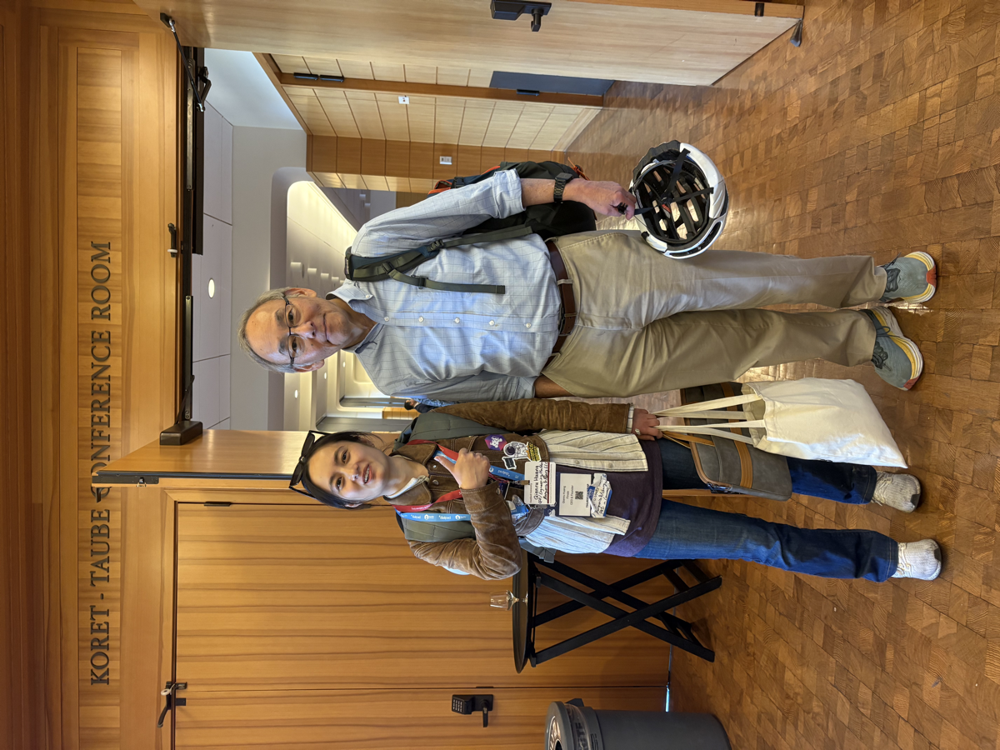
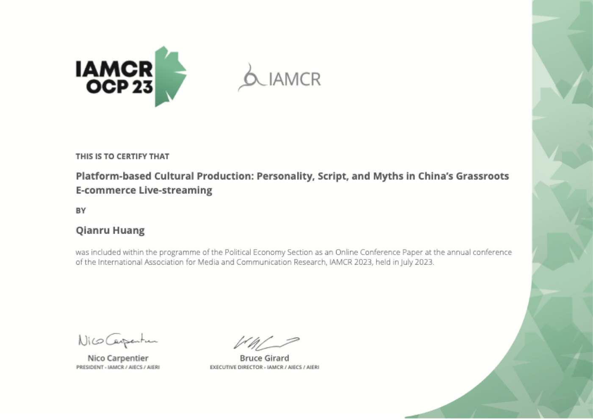

学者不需要等人邀请才拥有自己的声音。这里收录我能公开的全部研究文本：会议论文全文、期刊发表证明、博士研究计划、文献笔记，以及支撑研究伦理与方法的证书。
以草根电商直播为田野，分析主播的「人设—剧本—神话」三级叙事装置：直播不仅是销售渠道，更是一套平台化的文化生产机制。
情感分析 + 主题编码，考察 Reddit GPT 社区中社区规范、审核机制与内容策展对用户满意度与社群凝聚的影响。2024 年 12 月于雅典第 18 届全球研究国际年会现场报告。
与 Chenjie Zheng 合作：以生态女性主义视角重读韩江《素食者》，考察身体、自然与抵抗在文学文本中的性别政治。全文即将上线。
考察中国 LGBTQ+ 群体如何使用 AI 增强的社交产品，以及算法在身份形成、表征与社区话语中的角色与挑战。
与导师林玮合作（第二作者）：从去中心化、透明性与信息不可篡改等属性出发，分析「区块链+传媒」如何重塑视听平台的业务流程与商业模式。研究生毕业答辩资格论文。
硕士论文的前身与完整草稿：以 Limor Shifman 的迷因分析框架解剖中国网络戏仿文化的复制、变异与传播机制。
提交香港中文大学博士申请的研究计划（2024.11，意向导师 Prof. Sora Kim）：从企业传播教学法出发，量化考察项目式学习中学生与团队产出的决定因素。
S-O-R 与 PAD 情绪模型驱动的研究设计：问卷、153 位顾客访谈与多尺度色彩定量分析的方法论蓝本。
Calabrese、Zhang & Yu（UPenn Annenberg / UC Davis）发表的健康传播研究，是我「社交媒体 × 公共健康认知」方向的核心参考文献：以理论驱动的内容分析考察 PrEP 采纳的行为决定因素。我正在此框架上发展自己的 HIV 意识与 PrEP 传播研究（见下方在研方向）。
以下是正在进行、尚未成稿的研究方向——欢迎合作与交流。
延续 Calabrese et al. 的理论框架，考察中文社交媒体与 diaspora 社群中 PrEP/HIV 相关话语：恐惧诉求、污名、信息来源可信度如何影响预防性健康行为。
与健康科学方向的合作者推进肺腺癌相关的传播研究：病理报告的 AI 辅助解读如何改变患者的信息获取、焦虑水平与治疗决策沟通。
延续 IAMCR 2025 性别与传播分组的脉络，考察职场性别议题（招聘算法、母职惩罚、举报机制）在平台化劳动中的表征与治理。
「Never Feel It So Good」（Reddit GPT 社区）的延续：从社区观测走向架构层面对照——不同模型架构与系统提示如何塑造沉浸感、信任与依赖。
diaspora 与出海利益相关者研究的下一站：从「义乌制造」到「义乌附加」——小商品如何通过品牌、设计、IP 与内容实现价值跃迁。
家族矿业业务的运筹研究：车辆路径、装载排程与跨境物流的多目标优化，探索用 AI 求解器替代经验调度的可行性。
与合伙人 Jason Cai 共同推进的商业计划：连接用户、门店与技师的标准化汽车服务平台（轮胎、保养），三年十万用户、全美多城覆盖的增长路径。


社会与行为研究研究者资质，研究伦理与合规基础。
北京大学 C++ 程序设计 · JHU The Data Scientist's Toolbox · Leiden Miracles of Human Language。
中国科学院心理研究所心理咨询基础培训合格证书；NCTE 高级中学教师资格（心理）。
TOEFL 108/120 · GRE V166/Q169 · 粤语 · 日语 · 俄语（B2 证书）